git&github
约 2728 个字 7 行代码 14 张图片 预计阅读时间 9 分钟
git简介
是什么
- Git是⼀个免费、开源的分布式版本控制系统，旨在快速高效地处理从小到大的所有项目
基本操作
1.创建本地仓库： git init
- 该命令会在当前目录下创建⼀个名为
.git的隐藏子目录，这个目录包含了Git仓库的所有必要⽂件，例如对象数据库、索引文件、配置信息等。这个就是您的本地Git仓库。
2.添加文件到暂存区： git add
-
在Git中，⽂件的修改需要经过两个阶段才能被提交到版本库：首先是添加到暂存区 （Staging Area），然后才是提交到版本库
-
暂存区是⼀个中间区域，用于存放您希望在下一次提交中包含的更改。
git add命令就是用来将工作目录中的文件添加到暂存区的
3.提交文件到版本库： git commit
-
当您将所有希望提交的更改都添加到了暂存区后，就可以使⽤
git commit命令将这些更改永久地保存到Git版本库中 -
每⼀次提交都会生成⼀个唯⼀的提交ID（commit ID），并包含提交者信息、提交时间以及提交信息（commit message）。提交信息是本次提交的简要说明，非常重要，它能帮助您和团队成员理解每次提交的目的和内容。
其中，git commit -m "xxx" 是我们常见的命令，-m 后面的指令就是此次提交的信息，如果没有 -m 选项，Git会打开您配置的默认编辑器，让你输入提交信息
提交成功后，您会看到类似以下输出： [master (root-commit) 7c9a2b3] Initial commit: Add README and main.py 2 files changed, 0 insertions(+), 0 deletions(-) create mode 100644 README.md create mode 100644 main.py其中 7c9a2b3 是本次提交的简短提交ID。
4.查看仓库状态： git status
git status 命令⽤于查看工作目录和暂存区的当前状态。它会告诉您哪些文件被修改了但尚未暂存，哪些文件已暂存但尚未提交，以及哪些⽂件是未被Git追踪的新⽂件。这是⼀个非常常用的命令，可以帮助您随时了解仓库的状况。
可能的状态输出：
-
⼲净的⼯作区：
On branch master nothing to commit, working tree clean这表⽰您的工作目录和暂存区都没有未提交的更改。 -
有未追踪的⽂件：
```On branch master Untracked files: (use "git add ..." to include in what will be committed)
nothing added to commit but untracked files present (use "git add" to track) ```
这表示您创建了一个新文件new_file.txt，但尚未将其添加到Git的追踪范围。
- 有已修改但未暂存的⽂件：
``` On branch master Changes not staged for commit: (use "git add ..." to update what will be committed) (use "git restore ..." to discard changes in working directory)
no changes added to commit (use "git add" and/or "git commit -a")
这表示README.md⽂件已被修改，但尚未添加到暂存区。
- 有已暂存但未提交的⽂件：
``` On branch master Changes to be committed: (use "git restore --staged ..." to unstage)
``
这表示another\_file.txt 是新文件且已暂存，main.py已被修改且已暂存，等待提交。
5.查看提交历史： git log
-
git log命令⽤于查看项⽬的提交历史。它会按时间倒序显示所有的提交记录，包括提交 ID、作者、提交日期和提交信息。这是理解项目演变过程和查找特定更改的重要工具。 -
git log：查看所有提交历史 git log --oneline：查看简要的提交历史（一行显示）git log --oneline --gragh --all：查看图形化的提交历史
6.比较文件差异： git diff
git diff命令⽤于⽐较不同版本之间或工作目录与暂存区之间的⽂件差异。这是在提交前 检查更改内容，或在事后理解特定提交所做更改的重要⼯具
操作示例：
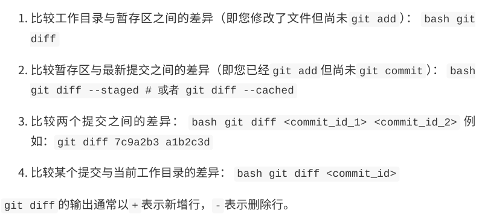
7.撤销修改：git restore/git reset
- 在Git中，撤销操作是⽇常开发中不可避免的⼀部分。Git提供了多种撤销命令，⽤于处理不同阶段的撤销需求
git restore ：撤销工作目录或暂存区的修改
git restore命令主要⽤于撤销⼯作⽬录中未暂存的修改，或者将暂存区中的⽂件恢复到 未暂存状态
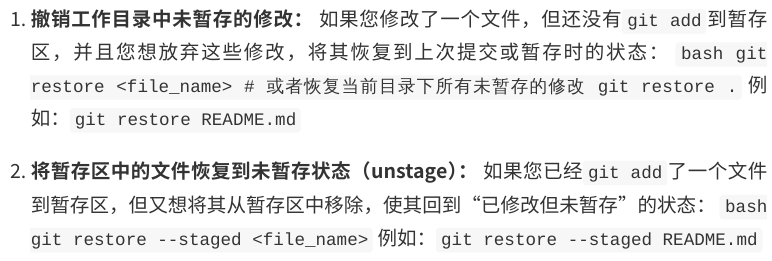
git reset ：重置HEAD到指定状态
-
git reset命令是⼀个更强⼤的撤销⼯具，它可以⽤来重置HEAD指针，从⽽改变分⽀的指向，并可以选择性地修改暂存区和⼯作⽬录 -
git reset有三种模式：--soft、-- mixed（默认）和--hard
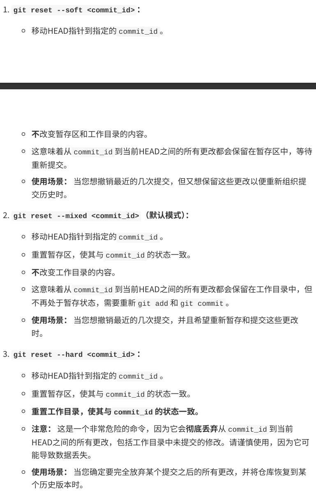
分支管理
- 分⽀是Git中最强⼤的功能之⼀，也是Git区别于其他版本控制系统的核⼼优势
什么是分支
-
在Git中，分⽀本质上是⼀个指向某个提交（commit）的指针。当您创建⼀个新的分⽀时， Git并不会复制整个代码库，⽽只是创建⼀个新的指针，指向当前的提交
-
默认情况下，Git仓库会有⼀个名为 master （或 main ）的主分⽀。当您进行提交时， master 分⽀的指针会随着新的提交向前移动
-
分⽀的引⼊，使得开发者可以在不影响主线 开发的情况下，独⽴地进⾏新功能开发、bug修复或实验性尝试
创建分支：git branch
git branch命令⽤于创建新的分⽀。创建分⽀后，HEAD指针仍然指向当前所在的分⽀
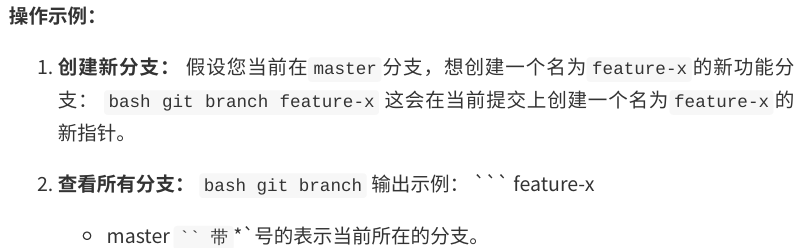
切换分支：git checkout
git checkout命令⽤于切换到指定的分⽀。切换分⽀后，您的⼯作⽬录会更新，以反映新 分⽀所指向的提交状态
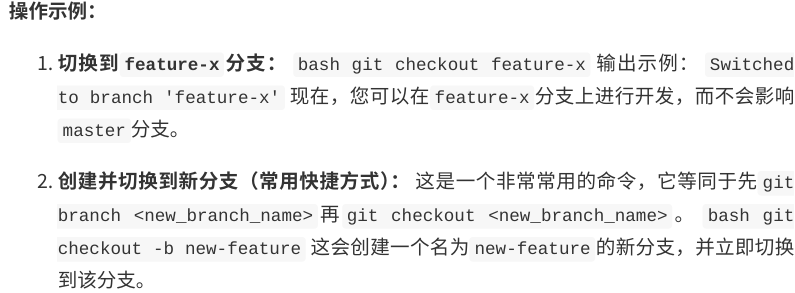
合并分支：git merge
- 当您在⼀个分⽀上完成了开发⼯作后，通常需要将该分⽀的更改合并回主分⽀（或其他⽬标 分⽀）。
git merge命令⽤于将⼀个或多个分⽀的更改合并到当前所在的分⽀
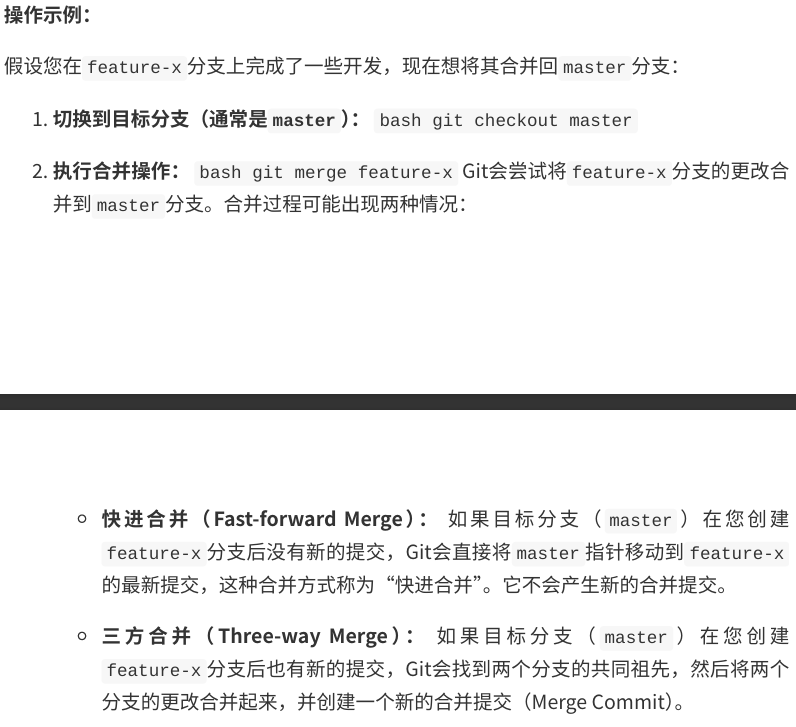
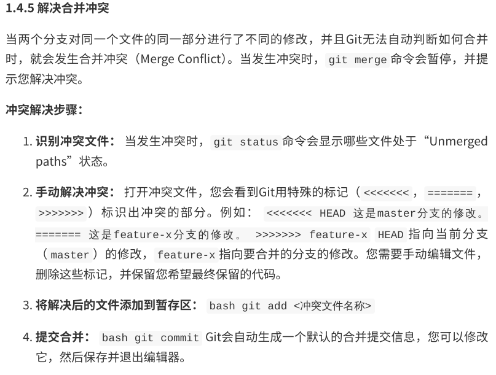
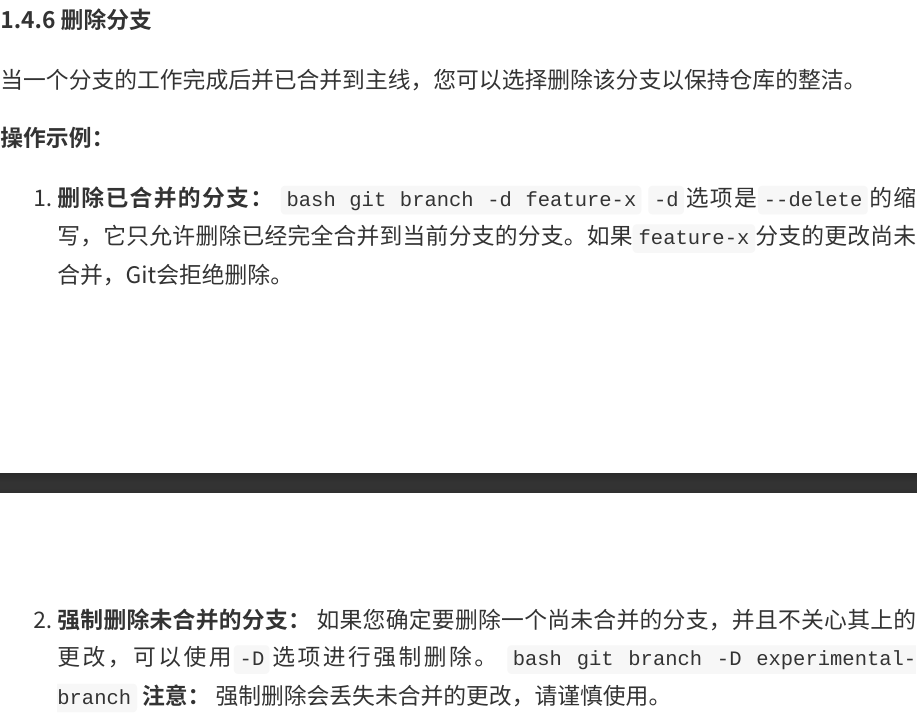
远程仓库
- 远程仓库是Git的另⼀个核⼼概念，它允许团队成员之间共享代码，并进⾏协作开发
什么是远程仓库
远程仓库（Remote Repository）是托管在⽹络上的Git仓库，它与本地仓库（Local Repository）相对应
当您克隆⼀个远程仓库时，Git会⾃动将其命名为 origin ，这是Git默认的远程仓库名称。
添加远程仓库： git remote add
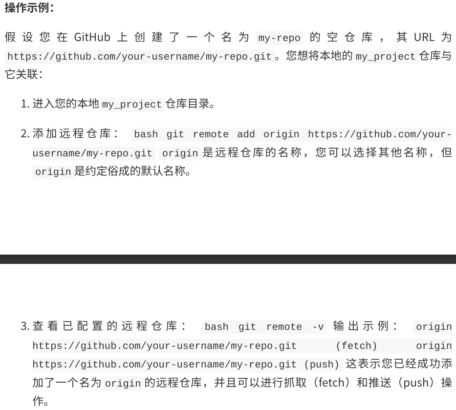
克隆远程仓库：git clone
git clone 命令⽤于从远程仓库复制⼀个完整的副本到本地。这通常是您开始参与⼀个现 有项⽬的第⼀步。克隆操作会⾃动将远程仓库设置为本地仓库的origin，并下载所有分支的历史记录
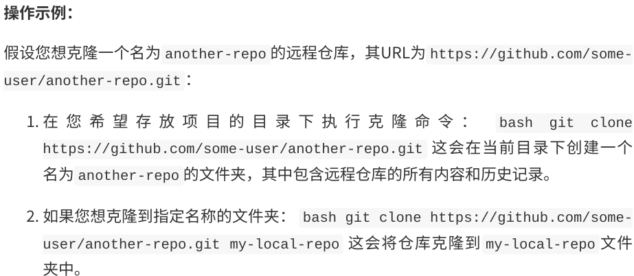
推送本地修改：git push
当您在本地仓库中进⾏了提交后，如果希望将这些更改分享给团队成员或保存到远程仓库， 就需要使⽤ git push 命令
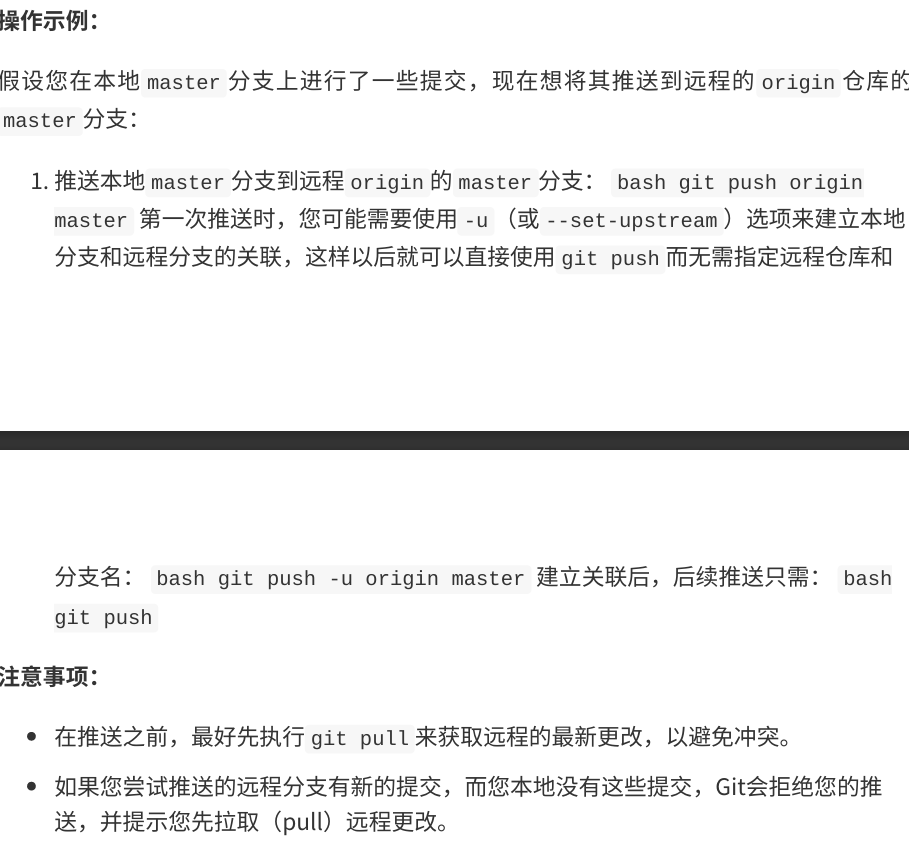
拉取远程修改：git pull/git fetch
当团队成员在远程仓库中提交了新的更改时，您需要将这些更改同步到您的本地仓库。Git 提供了两种主要的⽅式来获取远程更改： git fetch 和 git pull 。
git fetch ：获取远程更改但不合并
git fetch 命令会从远程仓库下载最新的提交历史，但不会⾃动合并到您当前的⼯作分 ⽀。它会将远程分⽀的最新状态更新到本地的远程跟踪分⽀（例如 origin/master ）
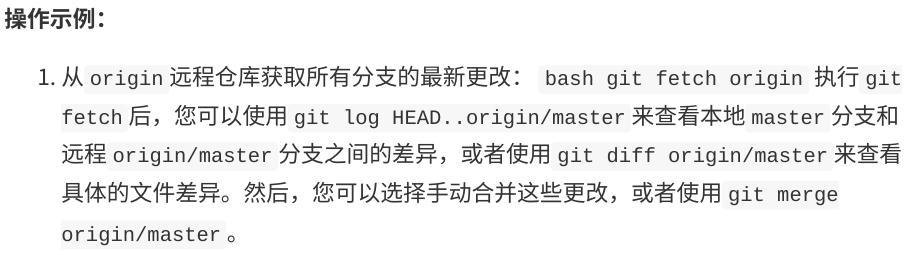
git pull ：获取远程更改并合并
git pull 命令是 git fetch 和 git merge 的组合。它会从远程仓库下载最新的提交历 史，并⾃动将其合并到您当前的⼯作分⽀
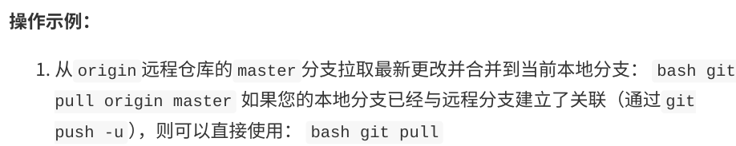
git pull和git fetch的选择
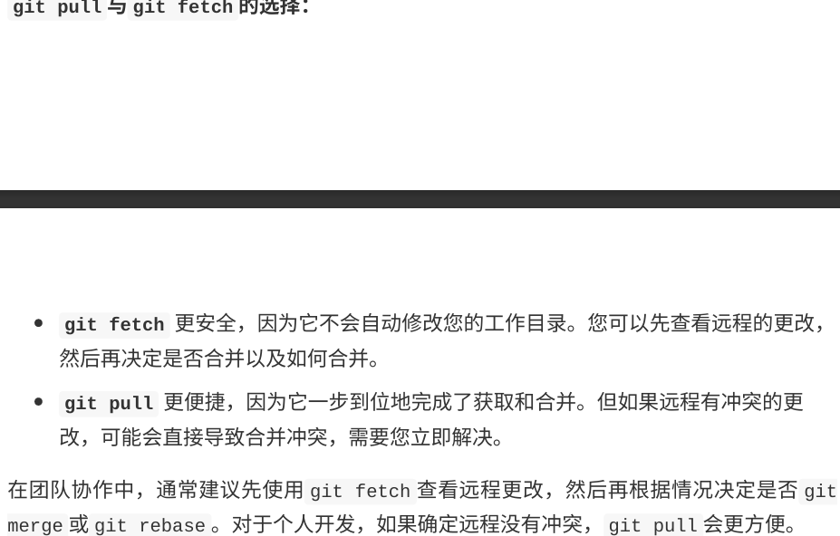
在团队协作中，通常建议先使⽤ git fetch 查看远程更改，然后再根据情况决定是否 git merge 或 git rebase 。对于个⼈开发，如果确定远程没有冲突， git pull 会更⽅便。
github实践
GitHub的核⼼功能 GitHub提供了丰富的功能来⽀持软件开发和协作，其中⼀些核⼼功能包括：
-
仓库（Repositories）： 存储项⽬代码、⽂件和所有版本历史的地⽅。每个项⽬通常 对应⼀个仓库。
-
分⽀（Branches）： 与Git中的分⽀概念⼀致，允许开发者在不影响主线代码的情况下 独⽴开发新功能或修复bug。
-
提交（Commits）： 记录代码变更的快照，包含提交信息、作者、时间等。
-
拉取请求（Pull Requests，PRs）： 开发者在⾃⼰的分⽀上完成⼯作后，向主仓库发 起合并请求，请求将⾃⼰的更改合并到主分⽀。这是GitHub上进⾏代码审查和协作的 核⼼机制。
-
问题（Issues）： ⽤于跟踪任务、bug、功能请求和讨论。团队成员可以在这⾥提出问 题、分配任务、讨论解决⽅案。
-
维基（Wikis）： 为项⽬提供⽂档和知识库。
-
项⽬（Projects）： 提供看板式（Kanban-style）的项⽬管理⼯具，帮助团队组织和 跟踪⼯作。
-
Actions： ⾃动化⼯作流，例如持续集成/持续部署（CI/CD）、⾃动化测试等。
-
Pages： 免费托管静态⽹站，通常⽤于项⽬⽂档、个⼈博客或演⽰⻚⾯。
-
Gist： 简单地分享代码⽚段或笔记。
协作流程
Fork仓库
Fork（派⽣）是GitHub上进⾏协作的第⼀步，尤其是在您想为别⼈的开源项⽬贡献代码， 但⼜没有直接写⼊权限时。当您Fork⼀个仓库时，GitHub会在您的账⼾下创建⼀个该仓库 的完整副本。这个副本是独⽴的，您可以随意修改，⽽不会影响到原始仓库
Pull Request（PR）流程
Pull Request（拉取请求，简称PR）是GitHub上进⾏代码合并和代码审查的核⼼机制。当 您在⾃⼰的Fork仓库或特性分⽀上完成了⼀项功能开发或bug修复后，您可以通过PR向原始 仓库的维护者提出请求，希望将您的更改合并到他们的项⽬中。
PR工作流程
- fork原始仓库
- git clone 克隆仓库到本地
- 添加原始仓库为远程上游：允许从原始仓库同步最新的修改
- 创建新分支进行开发
- 进行修改和提交
- 将修改后的分支提交到fork仓库：git push origin xxx(分支名)
- 创建Pull Request：点击”Compare & pull request“
Code Review
仓库维护者和其他贡献者进行审查，无需提交新的pr，只需要再次推送即可
一些高级操作
GitHub Actions
GitHub Actions是GitHub提供的⼀项持续集成/持续部署（CI/CD）服务，它允许您在 GitHub仓库中⾃动化、⾃定义和执⾏软件开发⼯作流程。您可以编写⼯作流（workflows） 来构建、测试、部署代码，或者执⾏任何您想在代码仓库事件（如push、pull request、 issue创建等）发⽣时⾃动运⾏的任务
GitHub Gist
Github Pages
GitHub Copilot
commit的规范
-
：表示本次提交的类型 -
feat：新功能（feature）
- fix：修复bug
- docs：文档
- style：格式
- refactor：重构（既不是新功能也不是bug修复的代码变动）
- pref：性能优化
- test：增加测试
-
build：构建过程或辅助工具的变动
-
：表示本次提交影响的范围 -
：提交的简短描述